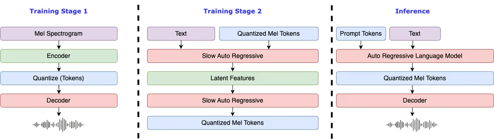

소개


Warning
이 코드베이스의 불법적인 사용에 대해서는 책임을 지지 않습니다. DMCA(Digital Millennium Copyright Act) 및 해당 지역의 관련 법률을 참조하십시오.
이 코드베이스와 모든 모델은 CC-BY-NC-SA-4.0 라이선스에 따라 배포됩니다.

요구 사항
- GPU 메모리: 4GB (추론용), 8GB (파인튜닝용)
- 시스템: Linux, Windows
Windows 설정
고급 Windows 사용자는 WSL2 또는 Docker를 사용하여 코드베이스를 실행하는 것을 고려할 수 있습니다.
# 파이썬 3.10 가상 환경 생성, virtualenv도 사용할 수 있습니다.
conda create -n fish-speech python=3.10
conda activate fish-speech
# pytorch 설치
pip3 install torch==2.4.1 torchvision==0.19.1 torchaudio==2.4.1 --index-url https://download.pytorch.org/whl/cu121
# fish-speech 설치
pip3 install -e .
# (가속 활성화) triton-windows 설치
pip install https://github.com/AnyaCoder/fish-speech/releases/download/v0.1.0/triton_windows-0.1.0-py3-none-any.whl
비전문 Windows 사용자는 Linux 환경 없이 프로젝트를 실행할 수 있는 다음 기본 방법을 고려할 수 있습니다 (모델 컴파일 기능 포함, 즉 torch.compile):
- 프로젝트 패키지 추출.
install_env.bat을 클릭하여 환경 설치.- 컴파일 가속을 활성화하려면 아래 단계를 따르세요:
- LLVM 컴파일러 다운로드:
- LLVM-17.0.6 (공식 사이트)
- LLVM-17.0.6 (미러 사이트)
LLVM-17.0.6-win64.exe를 다운로드 후 더블클릭하여 설치하고, 설치 경로 선택 시Add Path to Current User옵션을 체크하여 환경 변수를 추가합니다.- 설치가 완료되었는지 확인합니다.
- Microsoft Visual C++ 재배포 가능 패키지를 다운로드하여 .dll 누락 문제 해결:
- Visual Studio Community Edition을 다운로드하여 LLVM의 헤더 파일 의존성을 해결:
- Visual Studio 다운로드
- Visual Studio Installer를 설치한 후 Visual Studio Community 2022를 다운로드.
Desktop development with C++옵션을 선택하여 설치.
- CUDA Toolkit 12.x 다운로드 및 설치.
- LLVM 컴파일러 다운로드:
start.bat을 더블 클릭하여 훈련 추론 WebUI 관리 인터페이스를 엽니다. 필요한 경우 아래 지침에 따라API_FLAGS를 수정할 수 있습니다.
Optional
추론을 위해 WebUI를 사용하고자 하시나요?
프로젝트 루트 디렉토리의 API_FLAGS.txt 파일을 편집하고 첫 세 줄을 아래와 같이 수정하세요:
Optional
API 서버를 시작하고 싶으신가요?
프로젝트 루트 디렉토리의 API_FLAGS.txt 파일을 편집하고 첫 세 줄을 아래와 같이 수정하세요:
Optional
run_cmd.bat을 더블 클릭하여 이 프로젝트의 conda/python 명령줄 환경에 진입할 수 있습니다.
Linux 설정
pyproject.toml에서 자세한 내용을 확인하세요.
# 파이썬 3.10 가상 환경 생성, virtualenv도 사용할 수 있습니다.
conda create -n fish-speech python=3.10
conda activate fish-speech
# (Ubuntu / Debian 사용자) sox + ffmpeg 설치
apt install libsox-dev ffmpeg
# (Ubuntu / Debian 사용자) pyaudio 설치
apt install build-essential \
cmake \
libasound-dev \
portaudio19-dev \
libportaudio2 \
libportaudiocpp0
# pytorch 설치
pip3 install torch==2.4.1 torchvision==0.19.1 torchaudio==2.4.1
# fish-speech 설치
pip3 install -e .[stable]
macos 설정
MPS에서 추론을 수행하려면 --device mps 플래그를 추가하세요.
추론 속도 비교는 이 PR을 참조하십시오.
Warning
Apple Silicon 장치에서는 compile 옵션이 공식적으로 지원되지 않으므로 추론 속도가 향상된다는 보장은 없습니다.
# 파이썬 3.10 가상 환경 생성, virtualenv도 사용할 수 있습니다.
conda create -n fish-speech python=3.10
conda activate fish-speech
# pytorch 설치
pip install torch==2.4.1 torchvision==0.19.1 torchaudio==2.4.1
# fish-speech 설치
pip install -e .[stable]
Docker 설정
-
NVIDIA Container Toolkit 설치:
Docker에서 모델 훈련 및 추론에 GPU를 사용하려면 NVIDIA Container Toolkit을 설치해야 합니다:
Ubuntu 사용자:
# 저장소 추가 curl -fsSL https://nvidia.github.io/libnvidia-container/gpgkey | sudo gpg --dearmor -o /usr/share/keyrings/nvidia-container-toolkit-keyring.gpg \ && curl -s -L https://nvidia.github.io/libnvidia-container/stable/deb/nvidia-container-toolkit.list | \ sed 's#deb https://#deb [signed-by=/usr/share/keyrings/nvidia-container-toolkit-keyring.gpg] https://#g' | \ sudo tee /etc/apt/sources.list.d/nvidia-container-toolkit.list # nvidia-container-toolkit 설치 sudo apt-get update sudo apt-get install -y nvidia-container-toolkit # Docker 서비스 재시작 sudo systemctl restart docker다른 Linux 배포판 사용자는: NVIDIA Container Toolkit 설치 가이드를 참조하십시오.
-
fish-speech 이미지 가져오기 및 실행
-
모델 종속성 다운로드
Docker 컨테이너 내부의 터미널에서 아래 명령어를 사용하여 필요한
vqgan및llama모델을 Huggingface 리포지토리에서 다운로드합니다. -
환경 변수 설정 및 WebUI 접근
Docker 컨테이너 내부의 터미널에서
export GRADIO_SERVER_NAME="0.0.0.0"를 입력하여 Docker 내부에서 Gradio 서비스에 외부 접근을 허용합니다. 이후, 터미널에서python tools/webui.py명령어를 입력하여 WebUI 서비스를 시작합니다.WSL 또는 macOS를 사용하는 경우 http://localhost:7860에서 WebUI 인터페이스를 열 수 있습니다.
서버에 배포된 경우, localhost를 서버의 IP로 교체하세요.
변경 사항
- 2024/09/10: Fish-Speech 1.4 버전으로 업데이트, 데이터셋 크기 증가 및 양자화기의 n_groups를 4에서 8로 변경.
- 2024/07/02: Fish-Speech 1.2 버전으로 업데이트, VITS 디코더 제거 및 제로샷 능력 크게 향상.
- 2024/05/10: Fish-Speech 1.1 버전으로 업데이트, WER 감소 및 음색 유사성을 개선하기 위해 VITS 디코더 구현.
- 2024/04/22: Fish-Speech 1.0 버전 완료, VQGAN 및 LLAMA 모델 대폭 수정.
- 2023/12/28:
lora파인튜닝 지원 추가. - 2023/12/27:
gradient checkpointing,causual sampling, 및flash-attn지원 추가. - 2023/12/19: WebUI 및 HTTP API 업데이트.
- 2023/12/18: 파인튜닝 문서 및 관련 예시 업데이트.
- 2023/12/17:
text2semantic모델 업데이트, 음소 없는 모드 지원. - 2023/12/13: 베타 버전 출시, VQGAN 모델 및 LLAMA 기반 언어 모델(음소 지원만 포함).